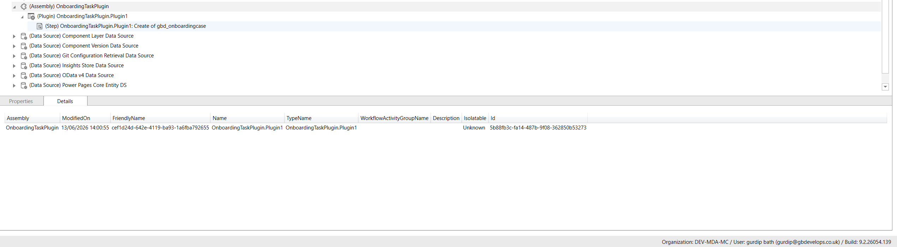

Employee Lifecycle Hub
Dataverse Solution · HR onboarding & offboarding
Model-Driven App · Dataverse · Canvas App · Power Automate · Security & ALM · Power BI · Azure DevOps · C# · Dataverse SDK · Plugin Development
Problem
HR coordinators chased onboarding and offboarding steps across email and spreadsheets. Line managers had no single view of their team's lifecycle cases. Missed tasks were common and hard to audit.
Solution
- Model-driven app for HR vs canvas for line managers (delegation-safe Power Fx)
- Task generation via Power Automate instead of manual checklists
- Column security profiles for PII at the data layer
Application
Model-Driven App · For HR coordinators · 5 screens

Step 1 of 5
Lifecycle Cases Dashboard- HR users see every open onboarding and offboarding case in one model-driven list view
- Filter and sort lifecycle cases by status, type, and owner without leaving the app
- Single system of record replaces spreadsheet tracking across the HR team
- Role-based views ensure users only see cases their security profile allows

Step 2 of 5
Create A Lifecycle Case- Guided intake form captures employee details and lifecycle event type in one place
- Required fields and validation rules enforce data quality at the point of entry
- Lookup relationships link the case to employee records in the Dataverse model
- Submitting a case kicks off automated task generation via Power Automate

Step 3 of 5
Open A Lifecycle Case- Active Onboarding Cases view filters to open onboarding and joiner cases — Status: Active, Case Type: Onboarding
- HR scans the list for the employee or case number they need without leaving the model-driven app
- Click the Lifecycle Case Title hyperlink on any row to open the full case record
- Entry point from the dashboard into case-level task tracking for that employee

Step 4 of 5
Open Active Tasks- Lifecycle case record opens on Case Identity — employee, case number, case type, and timeline in one place
- Active Tasks tab sits alongside Case Identity and Related on the case form header
- Click Active Tasks to load every onboarding action item still outstanding for that employee
- Replaces hunting through email threads — tasks live on the case the moment flows or the plugin provision them

Step 5 of 5
Color-Coded Task Status- Active Tasks For Employee subgrid lists all eight mandatory onboarding steps — offer letter through first-week check-in
- Completion Status column is color-coded: Not Started (grey), In Progress (orange), Completed (green)
- HR updates status in-line from the dropdown — no separate spreadsheet or status chase
- At-a-glance progress on the case record so coordinators spot blockers before steps go overdue
Canvas App · For line managers · 3 screens

Step 1 of 3
Line Manager Homepage- Canvas app gives line managers a dedicated, mobile-friendly entry point
- Delegation-safe Power Fx queries scope data to each manager's direct reports only
- Quick counts surface open cases and pending tasks for their team at a glance
- Separate from the HR model-driven app — simpler UX for non-HR personas

Step 2 of 3
Case Details For Managers- Managers drill into lifecycle case details for employees on their team
- Read-only fields protect sensitive HR data while showing relevant case progress
- Consistent layout across onboarding and offboarding case types
- No access to organisation-wide HR records outside their reporting line

Step 3 of 3
Team Task List- Task list filtered to the manager's direct reports — closing the loop on missed steps
- Managers can see which lifecycle tasks are overdue or still outstanding
- Reduces HR admin chasing managers for onboarding action items
- Same task data as the HR app, presented through a manager-scoped canvas view
Data Model
- 5-table Dataverse architecture with least-privilege security across Business Units, security roles, and column security profiles
- Model-driven app for HR and canvas app for line managers (direct reports only)
- Cloud flows provision 8 mandatory onboarding tasks in Dataverse on case creation
- Structured Business Process Flows cut operational data errors by 60%
- Star-schema Power BI reporting layer — 12–15 hrs/month manual spreadsheet work removed
- Managed solution ALM with environment variables and connection references
- C# Dataverse plugin — registered via Plugin Registration Tool to provision onboarding tasks on lifecycle case create
Automation
Power Automate · Automated stakeholder comms · 1 screen

- Stage-change flows send automated Outlook emails to the right stakeholders
- Notifications fire on lifecycle events — no manual copy-paste into email templates
- Email content is driven by case data written back from Dataverse
- Keeps HR, managers, and IT aligned when cases move through each stage
C# · Plugin Development · Server-side Dataverse logic · 1 screen

C# · Dataverse SDK · Plugin Development- C# plugin assembly registered in Plugin Registration Tool against the lifecycle case table
- Create step fires synchronously when HR submits a new onboarding case — no flow latency on task seeding
- Server-side Dataverse SDK logic keeps mandatory task provisioning inside the platform boundary
- Plugin ships in the managed solution alongside apps, flows, and security — same ALM pipeline
Learnings
- Testing flow idempotency earlier in UAT would have reduced rework on edge-case triggers
- Splitting HR and manager experiences into separate apps kept RBAC and delegation logic cleaner
- Environment variables from day one made DEV → PROD promotion straightforward